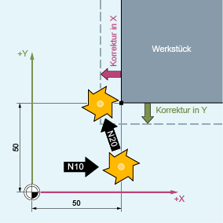
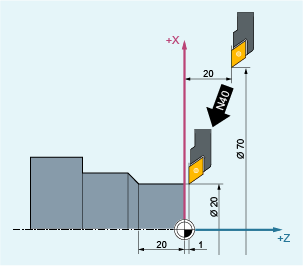
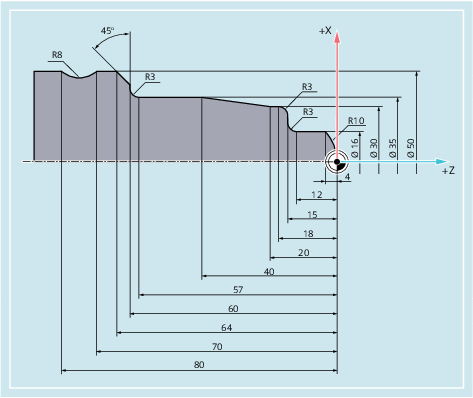

Bei eingeschalteter Werkzeugradiuskorrektur (WRK) errechnet die Steuerung automatisch für unterschiedliche Werkzeuge die jeweils äquidistanten Werkzeugwege zur programmierten Werkstückkontur.

R | Werkzeugradius |
S | Schneidenmittelpunkt |
Das Ein- und Ausschalten der Werkzeugradiuskorrektur erfolgt mit den Befehlen der G-Gruppe 7.
Syntax
| G0/G1 X... Y… Z... G41/G42 [OFFN=<Wert>] | |
| ... | |
| G40 X... Y… Z... |
Bedeutung
| WRK mit Bearbeitungsrichtung links von der Kontur einschalten |
| WRK mit Bearbeitungsrichtung rechts von der Kontur einschalten |
| Aufmaß zur programmierten Kontur (Offset Kontur normal) (optional) Z. B. zum Erzeugen von äquidistanten Bahnen für das Grobschlichten. |
| WRK ausschalten |
| Hinweis |
Im NC-Satz mit G40/G41/G42 muss G0 oder G1 aktiv sein und mindestens eine Achse der gewählten Arbeitsebene angegeben werden. Wird beim Einschalten nur eine Achse angegeben, dann wird die letzte Position der zweiten Achse automatisch ergänzt und in beiden Achsen verfahren. Die beiden Achsen müssen als Geometrieachsen im Kanal aktiv sein. Dies kann durch GEOAX-Programmierung sichergestellt werden. Wird im Satz mit der WRK-Anwahl keine Geometrieachse der aktuellen Ebene programmiert, findet keine Anwahl statt. Wird im Satz mit der WRK-Abwahl eine Geometrieachse programmiert, findet eine Abwahl der WRK auch dann statt, wenn diese nicht in der aktuellen Ebene liegt. |
Beispiele
Beispiel 1: Fräsen
| Programmcode | Kommentar |
|---|---|
| N10 G0 X50 T1 D1 | ; Nur die Werkzeuglängenkorrektur wird eingeschaltet. X50 wird unkorrigiert angefahren. |
| N20 G1 G41 Y50 F200 | ; Die Radiuskorrektur wird eingeschaltet, der Punkt X50/Y50 wird korrigiert angefahren. |
| N30 Y100 | |
| … |
Beispiel 2: "Klassische" Vorgehensweise am Beispiel Fräsen
"Klassische" Vorgehensweise:
Werkzeugaufruf
Werkzeug einwechseln.
Arbeitsebene und Werkzeugradiuskorrektur einschalten.
| Programmcode | Kommentar |
|---|---|
| N10 G0 Z100 | ; Freifahren zum Werkzeugwechsel. |
| N20 G17 T1 M6 | ; Werkzeugwechsel |
| N30 G0 X0 Y0 Z1 M3 S300 D1 | ; Werkzeugkorrekturwerte aufrufen, Längenkorrektur anwählen. |
| N40 Z-7 F500 | ; Werkzeug zustellen. |
| N50 G41 X20 Y20 | ; Werkzeugradiuskorrektur einschalten, Werkzeug arbeitet links von der Kontur. |
| N60 Y40 | ; Kontur fräsen. |
| N70 X40 Y70 | |
| N80 X80 Y50 | |
| N90 Y20 | |
| N100 X20 | |
| N110 G40 G0 Z100 M30 | ; Werkzeug freifahren, Programm-Ende. |
Beispiel 3: Drehen
| Programmcode | Kommentar |
|---|---|
| … | |
| N20 T1 D1 | ; Nur die Werkzeuglängenkorrektur wird eingeschaltet. |
| N30 G0 X70 Z20 | ; X70 Z20 wird unkorrigiert angefahren. |
| N40 G42 X20 Z1 | ; Die Radiuskorrektur wird eingeschaltet, der Punkt X20/Z1 wird korrigiert angefahren. |
| N50 G1 Z-20 F0.2 | |
| … |
Beispiel 4: Drehen
| Programmcode | Kommentar |
|---|---|
| N5 G0 G53 X280 Z380 D0 | ; Startpunkt |
| N10 TRANS X0 Z250 | ; Nullpunktverschiebung |
| N15 LIMS=4000 | ; Drehzahlbegrenzung (G96) |
| N20 G96 S250 M3 | ; konstanten Vorschub anwählen |
| N25 G90 T1 D1 M8 | ; Werkzeuganwahl und Korrektur anwählen |
| N30 G0 G42 X-1.5 Z1 | ; Werkzeug anstellen mit Werkzeugradiuskorrektur |
| N35 G1 X0 Z0 F0.25 | |
| N40 G3 X16 Z-4 I0 K-10 | ; Radius 10 drehen |
| N45 G1 Z-12 | |
| N50 G2 X22 Z-15 CR=3 | ; Radius 3 drehen |
| N55 G1 X24 | |
| N60 G3 X30 Z-18 I0 K-3 | ; Radius 3 drehen |
| N65 G1 Z-20 | |
| N70 X35 Z-40 | |
| N75 Z-57 | |
| N80 G2 X41 Z-60 CR=3 | ; Radius 3 drehen |
| N85 G1 X46 | |
| N90 X52 Z-63 | |
| N95 G0 G40 G97 X100 Z50 M9 | ; Werkzeugradiuskorrektur abwählen und Werkzeugwechselpunkt anfahren |
| N100 T2 D2 | ; Werkzeug aufrufen und Korrektur anwählen |
| N105 G96 S210 M3 | ; konstante Schnittgeschwindigkeit anwählen |
| N110 G0 G42 X50 Z-60 M8 | ; Werkzeug anstellen mit Werkzeugradiuskorrektur |
| N115 G1 Z-70 F0.12 | ; Durchmesser 50 drehen |
| N120 G2 X50 Z-80 I6.245 K-5 | ; Radius 8 drehen |
| N125 G0 G40 X100 Z50 M9 | ; Werkzeug abheben und Werkzeugradiuskorrektur abwählen |
| N130 G0 G53 X280 Z380 D0 M5 | ; Werkzeugwechselpunkt verfahren |
| N135 M30 | ; Programm-Ende |